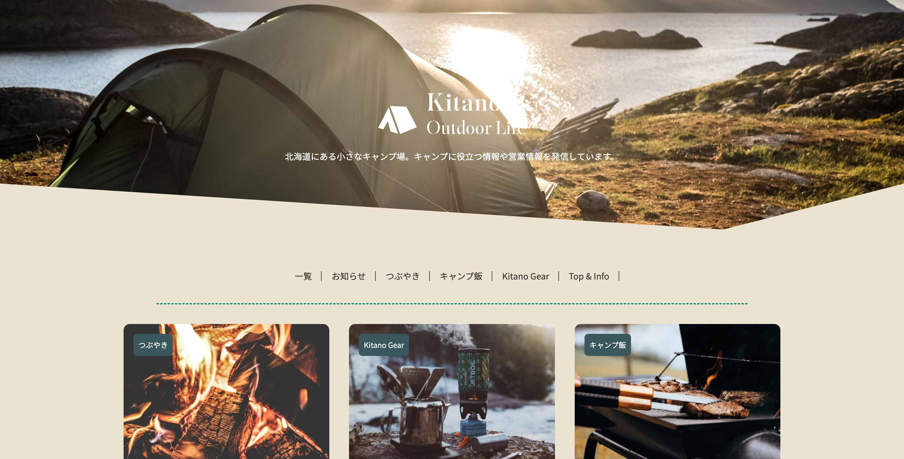

Kitano Outdoor BaseWeb site(WordPress)
Web site Create & Arrange
- View Size対応サイズ
- レスポンシブ
- Create Days実装期間
- 1日間
- Used Technology使用技術
- WordPress・PHP
Conceptコンセプト
WordPressを使ったWebサイト制作の練習として、オリジナルテーマを使って制作しました。
北海道の小さなキャンプ場が運営しているブログ形式の情報発信サイトで、「キャンプ好きのスタッフが初心者にも常連キャンパーにも役立つ情報を発信しているという」コンセプトです。
ナビゲーションから記事の一覧を見ることができ、さらにユーザーが求めている情報を選びやすいよう、カテゴリーごとに記事を分けて表示されるように設置しました。
トップページにはキャンプ場の情報・営業カレンダーやコンタクトフォームを設置し、必要な方にはキャンプ場自体の情報も得られるようにしています。
Impression制作を通して感じたこと
教材を参考にしながら自身でアレンジしたHTML・CSSで作ったオリジナルテーマをPHPファイルに変更し、WordPressに対応させました。
自分でアレンジを加えたことでWordPressとの関連付けに戸惑うこともありましたが、テンプレートにないデザインを使用した制作の可能性やPHPの基本的な書き方・データの呼び出し方を学ぶことができました。
また、テンプレートタグを使用したWordpress上の情報の取得や、ループを使って条件に合わせた投稿の表示等も行っています。
構造面ではヘッダー・フッター・ページ部分のファイルを分けて読み込み、変更のあるページ部分のみ変わるように設定したり、スタイルの読み込みファイルを分けたことで、管理がしやすくなるようにしています。
「変更する部分としない部分」を分けて管理できるようにしたことで、近年のフロントエンド開発で使われるコンポーネントを意識した開発の勉強にもなりました。
他にもプラグインを使ったカレンダーやコンタクトフォームの設置を行い、プラグインとの組み合わせでより可能性が広がると感じました。
個人的には、前職でWordPressを使用した記事の更新する機会があったため、投稿ページの使い方を思い出しつつ、サイトがどのようにできていたのか仕組みを知ることができ大変興味深く感じました。